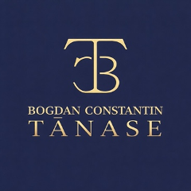

Dosare penale
Asistență și reprezentare în fața organelor de urmărire penală și a instanțelor, în toate fazele procesului penal.
Domeniu de practică
Dacă ai fost sancționat contravențional și consideri că procesul-verbal de contravenție este nelegal sau netemeinic, ai dreptul de a formula o plângere contravențională. Contestarea unei amenzi poate duce la anularea sancțiunii sau la înlocuirea acesteia cu avertisment, însă succesul depinde în mod esențial de modul în care este construită apărarea.
Ofer asistență juridică în Bacău pentru contestarea amenzilor contravenționale, intervenind rapid pentru analizarea situației și identificarea unui probatoriu adecvat precum și a celor mai eficiente argumente juridice.
Plângerea contravențională reprezintă mijlocul legal prin care puteți contesta un proces-verbal de contravenție, în termen de 15 zile de la comunicare.
Primul efect al introducerii plângerii contravenționale pe rolul Judecătoriei este suspendarea procesului-verbal, fapt care presupune că toate sancțiunile prevăzute nu se vor aplica, consecința fiind recuperarea permisului pe durata judecării plângerii, în cazul în care acesta a fost reținut de organele de poliție.
Asigur asistență juridică completă în materia plângerilor contravenționale:
Fie că este vorba despre amenzi rutiere, sancțiuni aplicate de autorități sau alte tipuri de contravenții, strategia juridică este adaptată fiecărui caz.
În practica judiciară, numeroase procese-verbale de contravenție sunt anulate din cauza unor erori de formă sau de fond. Printr-o analiză atentă a actului sancționator, pot identifica aspecte precum lipsa mențiunilor obligatorii, descrierea insuficientă a faptei sau nelegalitatea sancțiunii aplicate.
Pun accent pe o abordare clară și realistă, astfel încât să cunoașteți încă de la început șansele de succes și pașii necesari.
În urma verificării motivelor invocate prin plângerea contravențională, instanța poate dispune una dintre următoarele soluții:
Respectarea termenului și formularea corectă a plângerii sunt esențiale pentru admiterea acesteia.
Onorariul pentru redactarea și susținerea unei plângeri contravenționale pornește de la 1.600 lei, acesta fiind onorariul minimal recomandat, și va fi stabilit în funcție de complexitatea cauzei, probele necesare și durata procedurii.
Plângerea contravențională trebuie depusă în termen de 15 zile de la data comunicării procesului-verbal. Depășirea acestui termen duce, de regulă, la respingerea cererii.
Nu este obligatoriu, însă un avocat poate identifica mai ușor motivele de anulare și poate crește șansele de admitere a plângerii. Totodată, pentru a evita respingerea pe motive procedurale și pentru a structura corect probele, asistența unui avocat este recomandată mai ales în contravențiile rutiere și cele cu sancțiuni complementare grave.
Nu este obligatoriu să achitați amenda înainte de soluționarea cauzei, însă, din păcate, termenul de 30 de zile pentru a achita jumătate din minimul prevăzut de lege, curge de la data comunicării procesului-verbal. Cu alte cuvinte, dacă plângerea este respinsă, nu se mai poate plăti jumătate din minim după expirarea celor 30 de zile de la comunicare.
Pot fi contestate amenzi rutiere, sancțiuni aplicate de poliție, de Inspectoratul Teritorial al Muncii, de Autoritatea Națională pentru Protecția Consumatorilor, primărie, Inspectoratul pentru Situații de Urgență sau alte autorități competente.
Durata unei plângeri contravenționale este destul de ridicată, fiind în jurul perioadei de 1 an de zile pentru soluționarea pe fond a cauzei.
Textul de lege a fost modificat în sensul în care în prezent există o competență alternativă, fie Instanța aferentă locului săvârșirii faptei, fie Instanța de la domiciliul petentului.
Programare
Programează o consultație și hai să discutăm despre cum te pot ajuta în mod concret.
Alte domenii
Asistență și reprezentare în fața organelor de urmărire penală și a instanțelor, în toate fazele procesului penal.
Asistență în procedura legală pentru obținerea unui ordin de protecție în cazurile de violență domestică.
Asistență și reprezentare juridică pentru divorțul prin acordul soților sau pe cale judiciară.
